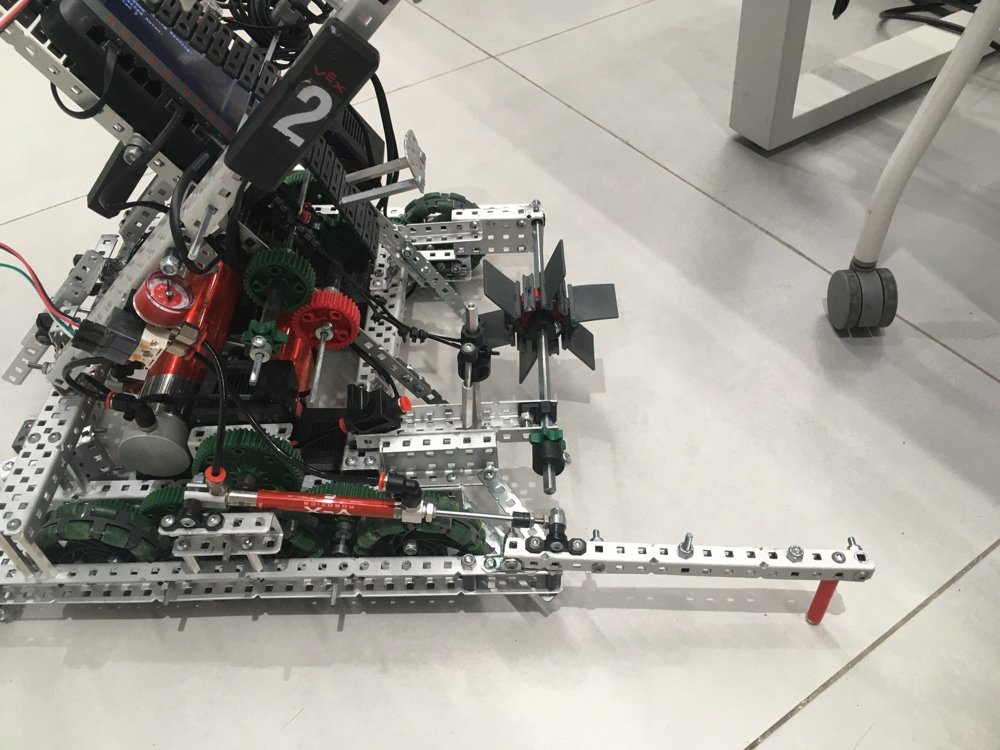
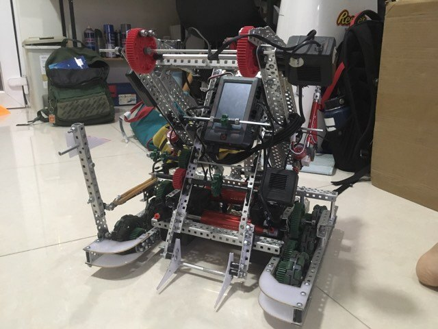
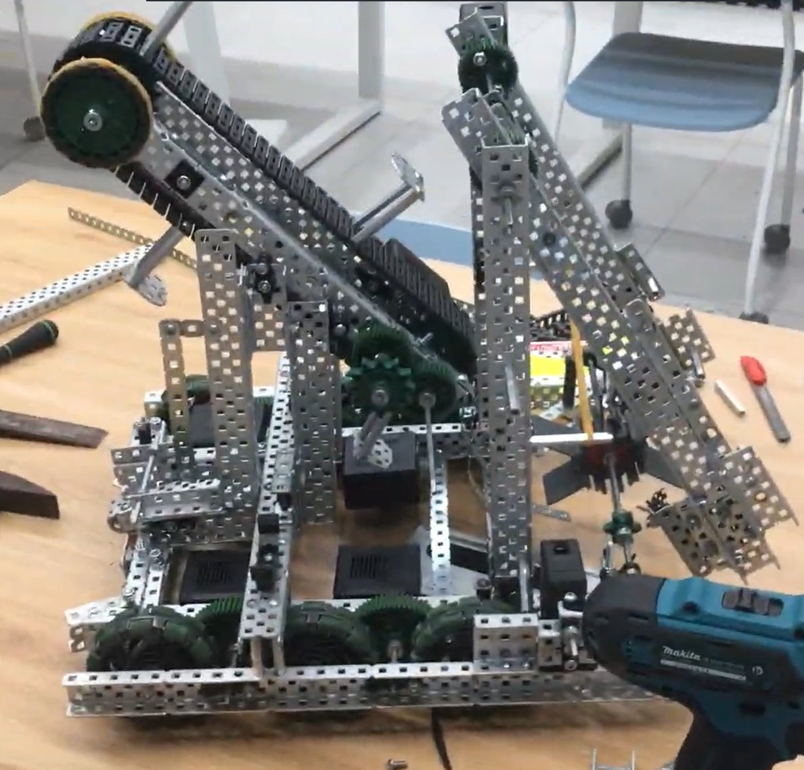
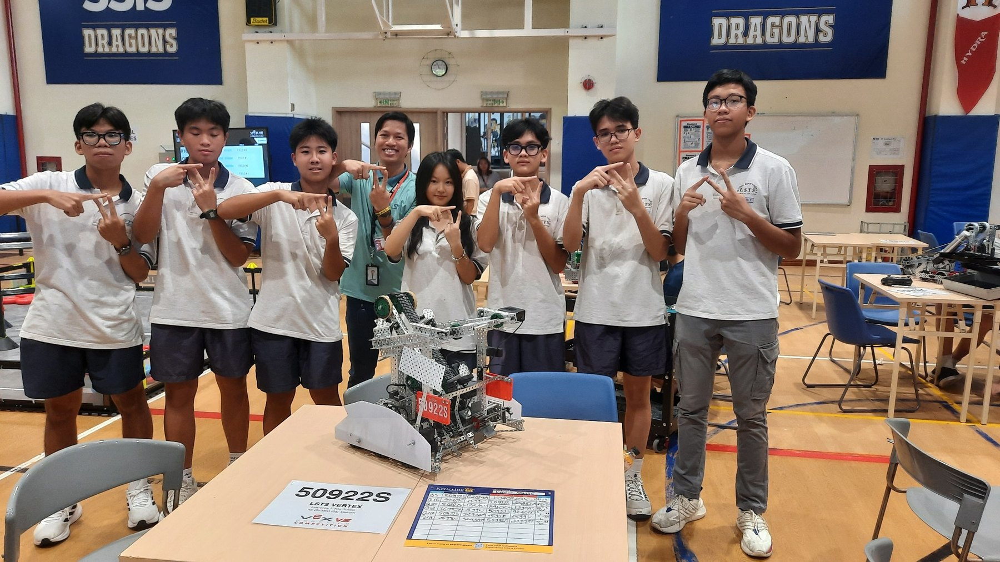
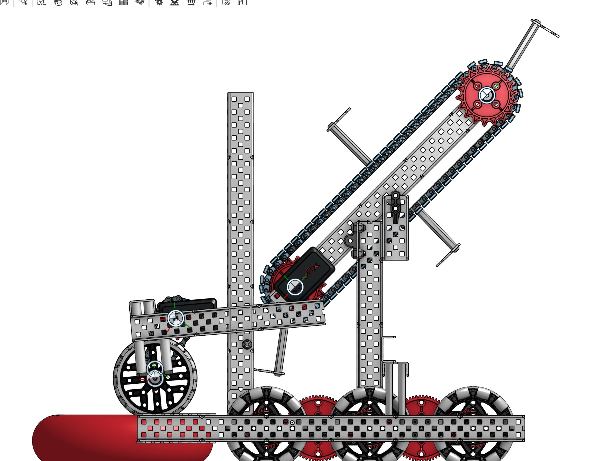

The starting point
We had ideas and a drill.
In August 2024 I joined the school robotics club knowing how to write code and almost nothing about how metal behaves. Our team had energy, a room full of parts, and a plan that consisted of the sentence "let's just build it and see."
We had no complete CAD models. No bill of materials. No testing plan. Design decisions were made with a drill in hand, and if a bracket didn't fit we cut a new one. For a first season that approach gets you moving fast — which is genuinely valuable, because a robot that exists teaches you more than a robot you're still arguing about.
It also compounds. Every shortcut we took in the build showed up later as a problem I first met in software.
No CAD
Geometry got decided at the workbench, so nothing could be checked before it was cut.
No BOM
We discovered what we were short of halfway through building the subsystem that needed it.
No test plan
"It worked once" counted as evidence. It usually wasn't.
Build process
Robot one.
A tall arm on a drivetrain that was never quite square. We loved it. It also lost us matches in ways we couldn't explain at the time.




The moment
The loader was one inch too high. I spent two weeks looking for it in the code.
What was actually wrong
Autonomous kept missing. We adjusted the routine, then adjusted it again, and each time the robot drifted off its planned path afterwards. The cause was mechanical: a loader mounted slightly too high, so the intake met the ring at the wrong angle and the recoil pushed the whole chassis off its heading.
What it changed
An uneven drivetrain, motors distributed without much thought, sensors mounted wherever there was room — all of it landed on the autonomous code, which is where I was standing. I stopped treating software as the place problems live and started treating it as the place problems show up.
Iteration
Robot two.
The second machine of the season. Not a redesign from theory — a redesign from a list of things that had embarrassed us.

On the field
Robot two was the first machine I helped build where I could predict what it would do before it did it. That sounds small. It is the entire difference between driving a robot and hoping at a robot.
The correction
Learning to draw before cutting.
By the end of the year I was modelling assemblies in CAD before touching metal. These renders are from that shift — the first designs on this team that existed on a screen before they existed on a bench.


Season one
Results.
Respectable for a first-year team. Not good enough to hide what was wrong with how we worked.
VEX V5 Southern QualificationOur first tournament as a team.
Top 8 Skills · Top 16 qualsVEX V5 Vietnam National ChampionshipFirst national competition, with the second-generation robot.
Top 12 in qualsChallenge
A robot built without CAD, a BOM or a test plan — and autonomous results we couldn't explain.
Decision
Stop debugging the symptom. Trace every failure back to a physical decision.
Action
Rebuilt the robot lower and cleaner, then started modelling assemblies before cutting them.
Result
Top 8 in Skills at Southern; top 12 nationally in our first year.
Lesson
Better software cannot fix a physical limitation. It can only hide it until the match matters.
Season one gave me a robot. It also gave me a method I had to go and find.

End of season one — VERTEX 50922S. Next year we would rebuild the robot three times.